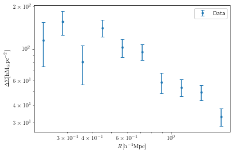

Day 3 Solutions
[63]:
#loading the required packages
%matplotlib inline
import pandas as pd
import numpy as np
import matplotlib.pyplot as plt
from scipy.spatial import cKDTree
from astropy.cosmology import FlatLambdaCDM
import glob
[74]:
def get_xyz(ra, dec):
ra = ra*np.pi/180.
dec = dec*np.pi/180.
x = np.cos(dec)*np.cos(ra)
y = np.cos(dec)*np.sin(ra)
z = np.sin(dec)
return x, y, z
[75]:
print(get_xyz(30,60))
(0.43301270189221946, 0.25, 0.8660254037844386)
[64]:
# selection cut on the lens sample
def lens_select(zmin=0.1, zmax=0.33, lammin=55, lammax=100):
#please check the file path properly
data = pd.read_csv('/home/idies/workspace/Storage/divyar/IAGRG_2022/DataStore/redmapper.dat', delim_whitespace=1)
#sample selection cut
idx = (data['lambda']>lammin) & (data['lambda']<=lammax)
idx = idx & (data['zred']>zmin) & (data['zred']<=zmax)
ra = data['ra'].values[idx]
dec = data['dec'].values[idx]
zred = data['zred'].values[idx]
#as we have no weights to apply we set them to unity
wgt = ra*1.0/ra
print('number of lenses=%d'%len(ra))
return ra, dec, zred, wgt
[78]:
x,y,z,c = lens_select()
np.mean(z)
number of lenses=560
[78]:
0.24233999447142857
[65]:
# sanity cheaks on the source files
def read_sources(ifil):
# various columns in sources
# ragal, decgal, e1gal, e2gal, wgal, rms_egal, mgal, c1gal, c2gal, R2gal, zphotgal
data = pd.read_csv(ifil, delim_whitespace=1).values
zphotgal = data[:,-1]
# sanity checks on the sources data
idx = (np.sum(np.isnan(data), axis=1)==0) & (zphotgal>0)
datagal = np.zeros((np.sum(idx),7))
datagal[:,:6] = data[idx,:6]
datagal[:,6] = data[idx,-1]
# collects only - ragal, decgal, e1gal, e2gal, wgal, rms_egal, zphotgal
return datagal
[66]:
# following surhud's lectures
def get_et(lra, ldec, sra, sdec, se1, se2):
lra = lra*np.pi/180
ldec = ldec*np.pi/180
sra = sra*np.pi/180
sdec = sdec*np.pi/180
c_theta = np.cos(ldec)*np.cos(sdec)*np.cos(lra - sra) + np.sin(ldec)*np.sin(sdec)
s_theta = np.sqrt(1-c_theta**2)
# phi to get the compute the tangential shear
c_phi = np.cos(ldec)*np.sin(sra - lra)*1.0/s_theta
s_phi = (-np.sin(ldec)*np.cos(sdec) + np.cos(ldec)*np.cos(sra - lra)*np.sin(sdec))*1.0/s_theta
# tangential shear
e_t = - se1*(2*c_phi**2 -1) - se2*(2*c_phi * s_phi)
return e_t
[67]:
print(get_et(lra=0, ldec=0, sra=0.123, sdec=0.045, se1 = 4.5e-2, se2 = 1.7e-2))
-0.04534629189830734
[70]:
def get_sigma_crit_inv(lzred, szred, cc):
# some important constants for the sigma crit computations
gee = 4.301e-9 #km^2 Mpc M_sun^-1 s^-2 gravitational constant
cee = 3e5 #km s^-1
# sigma_crit_calculations for a given lense-source pair
sigm_crit_inv = cc.angular_diameter_distance(lzred).value * cc.angular_diameter_distance_z1z2(lzred, szred).value * (1.0 + lzred)**2 * 1.0/cc.angular_diameter_distance(szred).value
sigm_crit_inv = sigm_crit_inv * 4*np.pi*gee*1.0/cee**2
sigm_crit_inv = 1e12*sigm_crit_inv #esd's are in pc not in Mpc
return sigm_crit_inv
[71]:
from astropy.cosmology import FlatLambdaCDM
cc = FlatLambdaCDM(H0=100, Om0=0.999)
print(get_sigma_crit_inv(lzred=0.33, szred=0.8, cc=cc))
0.00030436585298495184
[58]:
outputfile = '/home/idies/workspace/Temporary/divyar/scratch/iagrg_dsigma.dat'
def run_pipe(Omegam=0.315, rmin=0.2, rmax=2.0, nbins=10, zdiff=0.4, outputfile = outputfile):
#set the cosmology with omegaM parameter
cc = FlatLambdaCDM(H0=100, Om0=Omegam) # fixing H0=100 to set units in Mpc h-1
# set the projected radial binning
rmin = rmin
rmax = rmax
nbins = nbins #10 radial bins for our case
rbins = np.logspace(np.log10(rmin), np.log10(rmax), nbins + 1)
rdiff = np.log10(rbins[1]*1.0/rbins[0])
# initializing arrays for signal compuations
sumdsig_num = np.zeros(len(rbins[:-1]))
sumdsigsq_num = np.zeros(len(rbins[:-1]))
sumwls = np.zeros(len(rbins[:-1]))
sumwls_resp = np.zeros(len(rbins[:-1]))
# getting the lenses data
lra, ldec, lred, lwgt = lens_select(zmin=0.1, zmax=0.33, lammin=55, lammax=100)
# convert lense ra and dec into x,y,z cartesian coordinates
lx, ly, lz = get_xyz(lra, ldec)
# putting kd tree around the lenses
lens_tree = cKDTree(np.array([lx, ly, lz]).T)
print('lenses tree is ready\n')
# setting maximum search radius
dcommin = cc.comoving_distance(np.min(lred)).value
dismax = (rmax*1.0/(dcommin))
# lets first catch the file list for sources
sflist = np.sort(glob.glob('/home/idies/workspace/Storage/divyar/IAGRG_2022/DataStore/hsc/*.dat'))
# Ready to pounce on the source data
for ifil in sflist:
# catching the source data matrix
# please have a check for the columns names
datagal = read_sources(ifil)
Ngal = len(datagal[:,0]) # total number of galaxies in the source file
# first two entries are ra and dec for the sources
allragal = datagal[:,0]
alldecgal = datagal[:,1]
# ra and dec to x,y,z for sources
allsx, allsy, allsz = get_xyz(allragal, alldecgal)
# query in a ball around individual sources and collect the lenses ids with a maximum radius
slidx = lens_tree.query_ball_point(np.transpose([allsx, allsy, allsz]), dismax)
# various columns in sources
# ragal, decgal, e1gal, e2gal, wgal, rms_egal, mgal, c1gal, c2gal, R2gal, zphotgal
# looping over all the galaxies
for igal in range(Ngal):
ragal = datagal[igal,0]
decgal = datagal[igal,1]
e1gal = datagal[igal,2]
e2gal = datagal[igal,3]
wgal = datagal[igal,4]
rms_egal = datagal[igal,5]
zphotgal = datagal[igal,6]
# array of lenses indices
lidx = np.array(slidx[igal])
# removing sources which doesn't have any lenses around them
if len(lidx)==0:
continue
# selecting a cleaner background
zcut = (lred[lidx] < (zphotgal - zdiff)) #only taking the foreground lenses
# again skipping the onces which doesn't satisfy the above criteria
if np.sum(zcut)==0.0:
continue
# collecting the data of lenses around individual source
lidx = lidx[zcut] # this will catch the array indices for our lenses
sra = ragal
sdec = decgal
l_ra = lra[lidx]
l_dec = ldec[lidx]
l_zred = lred[lidx]
l_wgt = lwgt[lidx]
sx, sy, sz = get_xyz(sra,sdec) # individual galaxy ra,dec-->x,y,z
lx, ly, lz = get_xyz(l_ra,l_dec) # individual galaxy ra,dec-->x,y,z
# getting the radial separations for a lense source pair
sl_sep = np.sqrt((lx - sx)**2 + (ly - sy)**2 + (lz - sz)**2)
sl_sep = sl_sep * cc.comoving_distance(l_zred).value
for ll,sep in enumerate(sl_sep):
if sep<rmin or sep>rmax:
continue
rb = int(np.log10(sep*1.0/rmin)*1/rdiff)
# get tangantial components given positions and shapes
e_t = get_et(lra = l_ra[ll], ldec = l_dec[ll], sra = sra, sdec = sdec, se1 = e1gal, se2 = e2gal)
# sigma_crit_calculations for a given lense-source pair
sigm_crit_inv = get_sigma_crit_inv(l_zred[ll], zphotgal, cc)
# following equations given in the surhud's lectures
w_ls = l_wgt[ll] * wgal * (sigm_crit_inv)**2
w_ls_by_av_sigc_inv = l_wgt[ll] * wgal * sigm_crit_inv
# separate numerator and denominator computation
sumdsig_num[rb] += w_ls_by_av_sigc_inv * e_t
sumdsigsq_num[rb] += (w_ls_by_av_sigc_inv * e_t)**2
sumwls[rb] += w_ls
sumwls_resp[rb] += w_ls * (1-rms_egal**2)
print(ifil)
fout = open(outputfile, "w")
fout.write("# 0:rmin/2+rmax/2 1:DeltaSigma 2:SN_ErrDeltaSigma\n")
for i in range(len(rbins[:-1])):
rrmin = rbins[i]
rrmax = rbins[i+1]
Resp = sumwls_resp[i]*1.0/sumwls[i]
fout.write("%le\t%le\t%le\n"%(rrmin/2.0+rrmax/2.0, sumdsig_num[i]*1.0/sumwls[i]/2./Resp, np.sqrt(sumdsigsq_num[i])*1.0/sumwls[i]/2./Resp))
fout.write("#OK")
fout.close()
return 0
[61]:
run_pipe()
number of lenses=560
lenses tree is ready
/home/idies/workspace/Storage/divyar/IAGRG_2022/DataStore/hsc/0000.dat
/home/idies/workspace/Storage/divyar/IAGRG_2022/DataStore/hsc/0001.dat
/home/idies/workspace/Storage/divyar/IAGRG_2022/DataStore/hsc/0002.dat
/home/idies/workspace/Storage/divyar/IAGRG_2022/DataStore/hsc/0003.dat
/home/idies/workspace/Storage/divyar/IAGRG_2022/DataStore/hsc/0004.dat
/home/idies/workspace/Storage/divyar/IAGRG_2022/DataStore/hsc/0005.dat
/home/idies/workspace/Storage/divyar/IAGRG_2022/DataStore/hsc/0006.dat
/home/idies/workspace/Storage/divyar/IAGRG_2022/DataStore/hsc/0007.dat
/home/idies/workspace/Storage/divyar/IAGRG_2022/DataStore/hsc/0008.dat
/home/idies/workspace/Storage/divyar/IAGRG_2022/DataStore/hsc/0009.dat
/home/idies/workspace/Storage/divyar/IAGRG_2022/DataStore/hsc/0010.dat
/home/idies/workspace/Storage/divyar/IAGRG_2022/DataStore/hsc/0011.dat
/home/idies/workspace/Storage/divyar/IAGRG_2022/DataStore/hsc/0012.dat
/home/idies/workspace/Storage/divyar/IAGRG_2022/DataStore/hsc/0013.dat
/home/idies/workspace/Storage/divyar/IAGRG_2022/DataStore/hsc/0014.dat
/home/idies/workspace/Storage/divyar/IAGRG_2022/DataStore/hsc/0015.dat
/home/idies/workspace/Storage/divyar/IAGRG_2022/DataStore/hsc/0016.dat
/home/idies/workspace/Storage/divyar/IAGRG_2022/DataStore/hsc/0017.dat
/home/idies/workspace/Storage/divyar/IAGRG_2022/DataStore/hsc/0018.dat
/home/idies/workspace/Storage/divyar/IAGRG_2022/DataStore/hsc/0019.dat
/home/idies/workspace/Storage/divyar/IAGRG_2022/DataStore/hsc/0020.dat
/home/idies/workspace/Storage/divyar/IAGRG_2022/DataStore/hsc/0021.dat
/home/idies/workspace/Storage/divyar/IAGRG_2022/DataStore/hsc/0022.dat
/home/idies/workspace/Storage/divyar/IAGRG_2022/DataStore/hsc/0023.dat
/home/idies/workspace/Storage/divyar/IAGRG_2022/DataStore/hsc/0024.dat
/home/idies/workspace/Storage/divyar/IAGRG_2022/DataStore/hsc/0025.dat
/home/idies/workspace/Storage/divyar/IAGRG_2022/DataStore/hsc/0026.dat
/home/idies/workspace/Storage/divyar/IAGRG_2022/DataStore/hsc/0027.dat
/home/idies/workspace/Storage/divyar/IAGRG_2022/DataStore/hsc/0028.dat
/home/idies/workspace/Storage/divyar/IAGRG_2022/DataStore/hsc/0029.dat
/home/idies/workspace/Storage/divyar/IAGRG_2022/DataStore/hsc/0030.dat
/home/idies/workspace/Storage/divyar/IAGRG_2022/DataStore/hsc/0031.dat
/home/idies/workspace/Storage/divyar/IAGRG_2022/DataStore/hsc/0032.dat
/home/idies/workspace/Storage/divyar/IAGRG_2022/DataStore/hsc/0033.dat
/home/idies/workspace/Storage/divyar/IAGRG_2022/DataStore/hsc/0034.dat
/home/idies/workspace/Storage/divyar/IAGRG_2022/DataStore/hsc/0035.dat
/home/idies/workspace/Storage/divyar/IAGRG_2022/DataStore/hsc/0036.dat
/home/idies/workspace/Storage/divyar/IAGRG_2022/DataStore/hsc/0037.dat
/home/idies/workspace/Storage/divyar/IAGRG_2022/DataStore/hsc/0038.dat
/home/idies/workspace/Storage/divyar/IAGRG_2022/DataStore/hsc/0039.dat
/home/idies/workspace/Storage/divyar/IAGRG_2022/DataStore/hsc/0040.dat
/home/idies/workspace/Storage/divyar/IAGRG_2022/DataStore/hsc/0041.dat
/home/idies/workspace/Storage/divyar/IAGRG_2022/DataStore/hsc/0042.dat
/home/idies/workspace/Storage/divyar/IAGRG_2022/DataStore/hsc/0043.dat
/home/idies/workspace/Storage/divyar/IAGRG_2022/DataStore/hsc/0044.dat
/home/idies/workspace/Storage/divyar/IAGRG_2022/DataStore/hsc/0045.dat
/home/idies/workspace/Storage/divyar/IAGRG_2022/DataStore/hsc/0046.dat
/home/idies/workspace/Storage/divyar/IAGRG_2022/DataStore/hsc/0047.dat
/home/idies/workspace/Storage/divyar/IAGRG_2022/DataStore/hsc/0048.dat
/home/idies/workspace/Storage/divyar/IAGRG_2022/DataStore/hsc/0049.dat
/home/idies/workspace/Storage/divyar/IAGRG_2022/DataStore/hsc/0050.dat
/home/idies/workspace/Storage/divyar/IAGRG_2022/DataStore/hsc/0051.dat
/home/idies/workspace/Storage/divyar/IAGRG_2022/DataStore/hsc/0052.dat
/home/idies/workspace/Storage/divyar/IAGRG_2022/DataStore/hsc/0053.dat
/home/idies/workspace/Storage/divyar/IAGRG_2022/DataStore/hsc/0054.dat
/home/idies/workspace/Storage/divyar/IAGRG_2022/DataStore/hsc/0055.dat
/home/idies/workspace/Storage/divyar/IAGRG_2022/DataStore/hsc/0056.dat
/home/idies/workspace/Storage/divyar/IAGRG_2022/DataStore/hsc/0057.dat
/home/idies/workspace/Storage/divyar/IAGRG_2022/DataStore/hsc/0058.dat
/home/idies/workspace/Storage/divyar/IAGRG_2022/DataStore/hsc/0059.dat
/home/idies/workspace/Storage/divyar/IAGRG_2022/DataStore/hsc/0060.dat
/home/idies/workspace/Storage/divyar/IAGRG_2022/DataStore/hsc/0061.dat
/home/idies/workspace/Storage/divyar/IAGRG_2022/DataStore/hsc/0062.dat
/home/idies/workspace/Storage/divyar/IAGRG_2022/DataStore/hsc/0063.dat
/home/idies/workspace/Storage/divyar/IAGRG_2022/DataStore/hsc/0064.dat
/home/idies/workspace/Storage/divyar/IAGRG_2022/DataStore/hsc/0065.dat
/home/idies/workspace/Storage/divyar/IAGRG_2022/DataStore/hsc/0066.dat
/home/idies/workspace/Storage/divyar/IAGRG_2022/DataStore/hsc/0067.dat
/home/idies/workspace/Storage/divyar/IAGRG_2022/DataStore/hsc/0068.dat
/home/idies/workspace/Storage/divyar/IAGRG_2022/DataStore/hsc/0069.dat
/home/idies/workspace/Storage/divyar/IAGRG_2022/DataStore/hsc/0070.dat
/home/idies/workspace/Storage/divyar/IAGRG_2022/DataStore/hsc/0071.dat
/home/idies/workspace/Storage/divyar/IAGRG_2022/DataStore/hsc/0072.dat
/home/idies/workspace/Storage/divyar/IAGRG_2022/DataStore/hsc/0073.dat
/home/idies/workspace/Storage/divyar/IAGRG_2022/DataStore/hsc/0074.dat
/home/idies/workspace/Storage/divyar/IAGRG_2022/DataStore/hsc/0075.dat
/home/idies/workspace/Storage/divyar/IAGRG_2022/DataStore/hsc/0076.dat
/home/idies/workspace/Storage/divyar/IAGRG_2022/DataStore/hsc/0077.dat
/home/idies/workspace/Storage/divyar/IAGRG_2022/DataStore/hsc/0078.dat
/home/idies/workspace/Storage/divyar/IAGRG_2022/DataStore/hsc/0079.dat
/home/idies/workspace/Storage/divyar/IAGRG_2022/DataStore/hsc/0080.dat
/home/idies/workspace/Storage/divyar/IAGRG_2022/DataStore/hsc/0081.dat
/home/idies/workspace/Storage/divyar/IAGRG_2022/DataStore/hsc/0082.dat
/home/idies/workspace/Storage/divyar/IAGRG_2022/DataStore/hsc/0083.dat
/home/idies/workspace/Storage/divyar/IAGRG_2022/DataStore/hsc/0084.dat
/home/idies/workspace/Storage/divyar/IAGRG_2022/DataStore/hsc/0085.dat
/home/idies/workspace/Storage/divyar/IAGRG_2022/DataStore/hsc/0086.dat
/home/idies/workspace/Storage/divyar/IAGRG_2022/DataStore/hsc/0087.dat
/home/idies/workspace/Storage/divyar/IAGRG_2022/DataStore/hsc/0088.dat
/home/idies/workspace/Storage/divyar/IAGRG_2022/DataStore/hsc/0089.dat
/home/idies/workspace/Storage/divyar/IAGRG_2022/DataStore/hsc/0090.dat
/home/idies/workspace/Storage/divyar/IAGRG_2022/DataStore/hsc/0091.dat
/home/idies/workspace/Storage/divyar/IAGRG_2022/DataStore/hsc/0092.dat
/home/idies/workspace/Storage/divyar/IAGRG_2022/DataStore/hsc/0093.dat
/home/idies/workspace/Storage/divyar/IAGRG_2022/DataStore/hsc/0094.dat
/home/idies/workspace/Storage/divyar/IAGRG_2022/DataStore/hsc/0095.dat
/home/idies/workspace/Storage/divyar/IAGRG_2022/DataStore/hsc/0096.dat
/home/idies/workspace/Storage/divyar/IAGRG_2022/DataStore/hsc/0097.dat
/home/idies/workspace/Storage/divyar/IAGRG_2022/DataStore/hsc/0098.dat
/home/idies/workspace/Storage/divyar/IAGRG_2022/DataStore/hsc/0099.dat
/home/idies/workspace/Storage/divyar/IAGRG_2022/DataStore/hsc/0100.dat
/home/idies/workspace/Storage/divyar/IAGRG_2022/DataStore/hsc/0101.dat
/home/idies/workspace/Storage/divyar/IAGRG_2022/DataStore/hsc/0102.dat
/home/idies/workspace/Storage/divyar/IAGRG_2022/DataStore/hsc/0103.dat
/home/idies/workspace/Storage/divyar/IAGRG_2022/DataStore/hsc/0104.dat
/home/idies/workspace/Storage/divyar/IAGRG_2022/DataStore/hsc/0105.dat
/home/idies/workspace/Storage/divyar/IAGRG_2022/DataStore/hsc/0106.dat
/home/idies/workspace/Storage/divyar/IAGRG_2022/DataStore/hsc/0107.dat
/home/idies/workspace/Storage/divyar/IAGRG_2022/DataStore/hsc/0108.dat
/home/idies/workspace/Storage/divyar/IAGRG_2022/DataStore/hsc/0109.dat
/home/idies/workspace/Storage/divyar/IAGRG_2022/DataStore/hsc/0110.dat
/home/idies/workspace/Storage/divyar/IAGRG_2022/DataStore/hsc/0111.dat
/home/idies/workspace/Storage/divyar/IAGRG_2022/DataStore/hsc/0112.dat
/home/idies/workspace/Storage/divyar/IAGRG_2022/DataStore/hsc/0113.dat
/home/idies/workspace/Storage/divyar/IAGRG_2022/DataStore/hsc/0114.dat
/home/idies/workspace/Storage/divyar/IAGRG_2022/DataStore/hsc/0115.dat
/home/idies/workspace/Storage/divyar/IAGRG_2022/DataStore/hsc/0116.dat
/home/idies/workspace/Storage/divyar/IAGRG_2022/DataStore/hsc/0117.dat
/home/idies/workspace/Storage/divyar/IAGRG_2022/DataStore/hsc/0118.dat
/home/idies/workspace/Storage/divyar/IAGRG_2022/DataStore/hsc/0119.dat
/home/idies/workspace/Storage/divyar/IAGRG_2022/DataStore/hsc/0120.dat
/home/idies/workspace/Storage/divyar/IAGRG_2022/DataStore/hsc/0121.dat
/home/idies/workspace/Storage/divyar/IAGRG_2022/DataStore/hsc/0122.dat
/home/idies/workspace/Storage/divyar/IAGRG_2022/DataStore/hsc/0123.dat
/home/idies/workspace/Storage/divyar/IAGRG_2022/DataStore/hsc/0124.dat
/home/idies/workspace/Storage/divyar/IAGRG_2022/DataStore/hsc/0125.dat
/home/idies/workspace/Storage/divyar/IAGRG_2022/DataStore/hsc/0126.dat
/home/idies/workspace/Storage/divyar/IAGRG_2022/DataStore/hsc/0127.dat
/home/idies/workspace/Storage/divyar/IAGRG_2022/DataStore/hsc/0128.dat
/home/idies/workspace/Storage/divyar/IAGRG_2022/DataStore/hsc/0129.dat
/home/idies/workspace/Storage/divyar/IAGRG_2022/DataStore/hsc/0130.dat
/home/idies/workspace/Storage/divyar/IAGRG_2022/DataStore/hsc/0131.dat
/home/idies/workspace/Storage/divyar/IAGRG_2022/DataStore/hsc/0132.dat
/home/idies/workspace/Storage/divyar/IAGRG_2022/DataStore/hsc/0133.dat
/home/idies/workspace/Storage/divyar/IAGRG_2022/DataStore/hsc/0134.dat
/home/idies/workspace/Storage/divyar/IAGRG_2022/DataStore/hsc/0135.dat
/home/idies/workspace/Storage/divyar/IAGRG_2022/DataStore/hsc/0136.dat
/home/idies/workspace/Storage/divyar/IAGRG_2022/DataStore/hsc/0137.dat
/home/idies/workspace/Storage/divyar/IAGRG_2022/DataStore/hsc/0138.dat
/home/idies/workspace/Storage/divyar/IAGRG_2022/DataStore/hsc/0139.dat
/home/idies/workspace/Storage/divyar/IAGRG_2022/DataStore/hsc/0140.dat
/home/idies/workspace/Storage/divyar/IAGRG_2022/DataStore/hsc/0141.dat
/home/idies/workspace/Storage/divyar/IAGRG_2022/DataStore/hsc/0142.dat
/home/idies/workspace/Storage/divyar/IAGRG_2022/DataStore/hsc/0143.dat
/home/idies/workspace/Storage/divyar/IAGRG_2022/DataStore/hsc/0144.dat
/home/idies/workspace/Storage/divyar/IAGRG_2022/DataStore/hsc/0145.dat
/home/idies/workspace/Storage/divyar/IAGRG_2022/DataStore/hsc/0146.dat
/home/idies/workspace/Storage/divyar/IAGRG_2022/DataStore/hsc/0147.dat
/home/idies/workspace/Storage/divyar/IAGRG_2022/DataStore/hsc/0148.dat
/home/idies/workspace/Storage/divyar/IAGRG_2022/DataStore/hsc/0149.dat
/home/idies/workspace/Storage/divyar/IAGRG_2022/DataStore/hsc/0150.dat
/home/idies/workspace/Storage/divyar/IAGRG_2022/DataStore/hsc/0151.dat
[61]:
0
[62]:
dat = np.loadtxt('iagrg_dsigma.dat')
plt.errorbar(dat[:,0], dat[:,1], yerr=dat[:,2], fmt='.', capsize=3, label='Data')
plt.legend()
plt.xlabel(r'$R[{\rm h^{-1}Mpc}]$')
plt.ylabel(r'$\Delta\Sigma [{\rm h M_\odot pc^{-2}}]$')
plt.xscale('log')
plt.yscale('log')

[ ]: